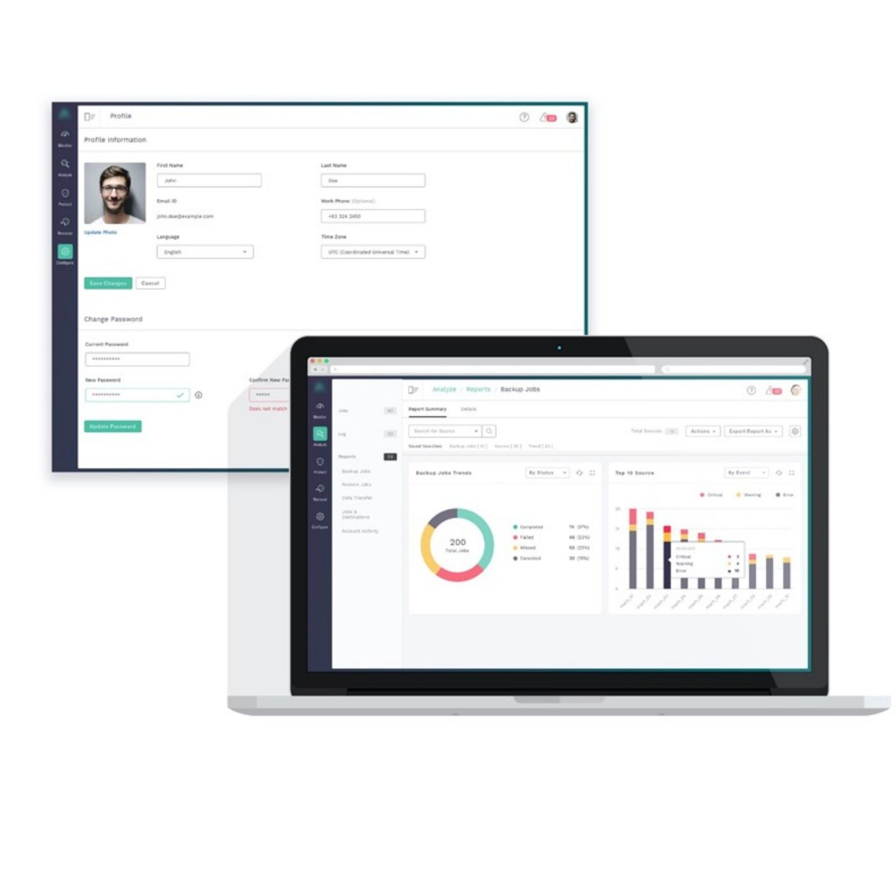
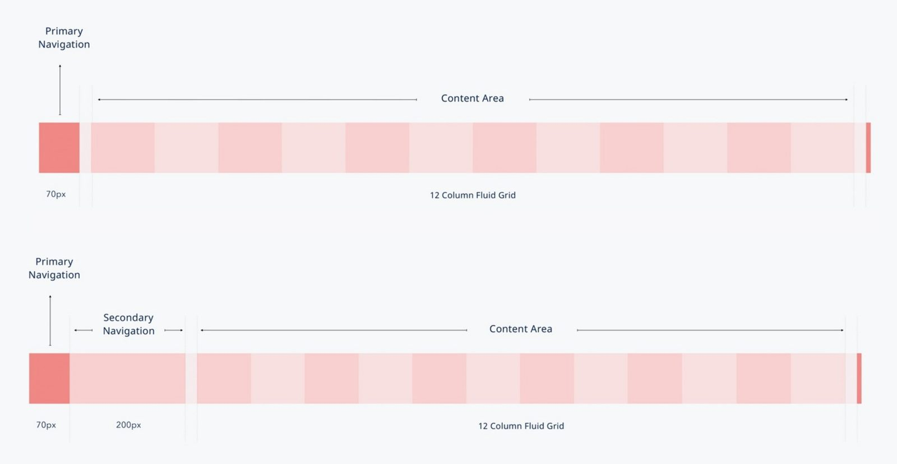
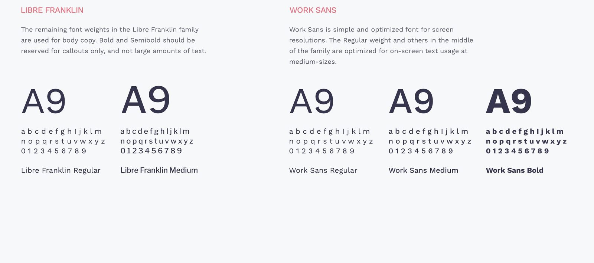
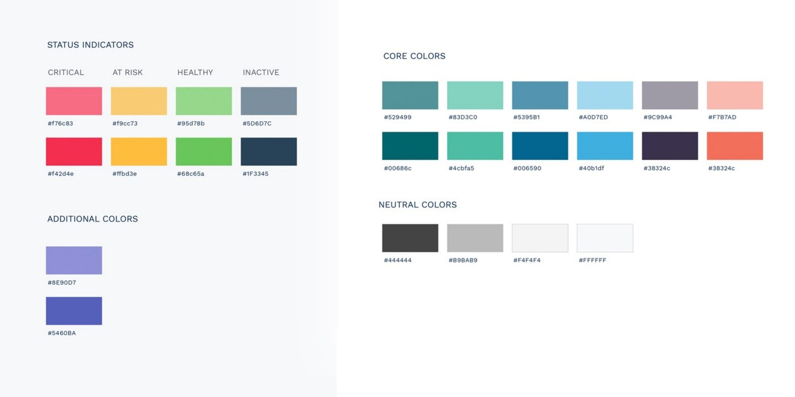
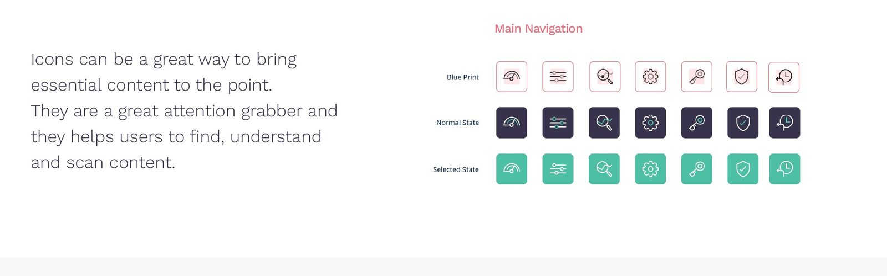
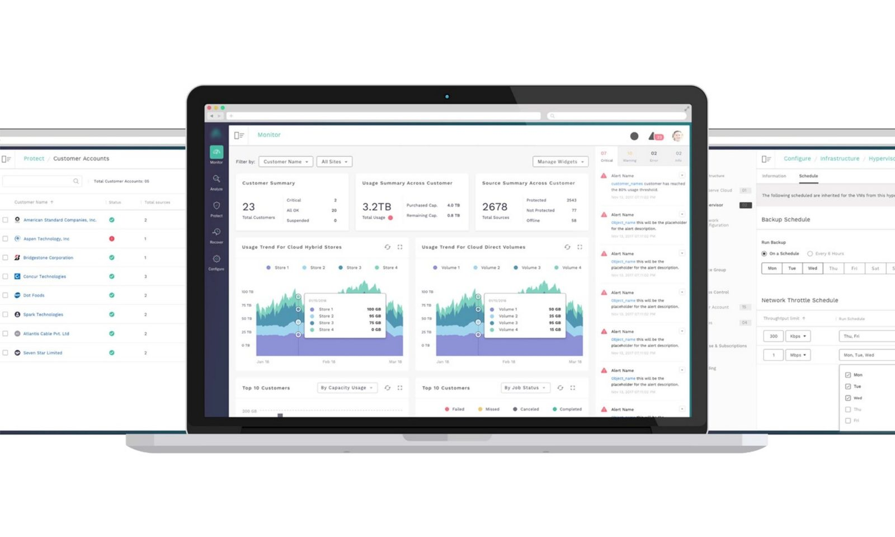
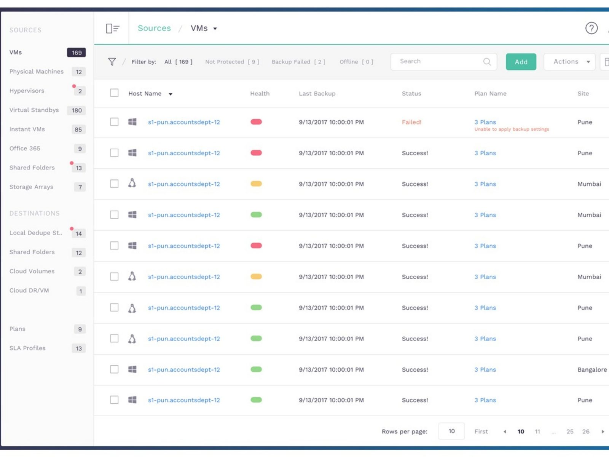
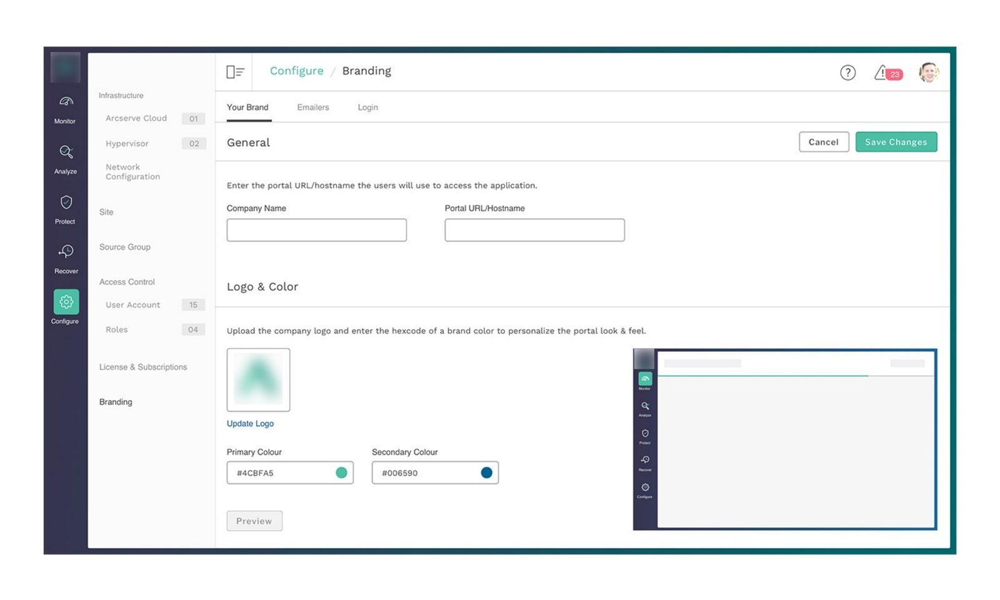
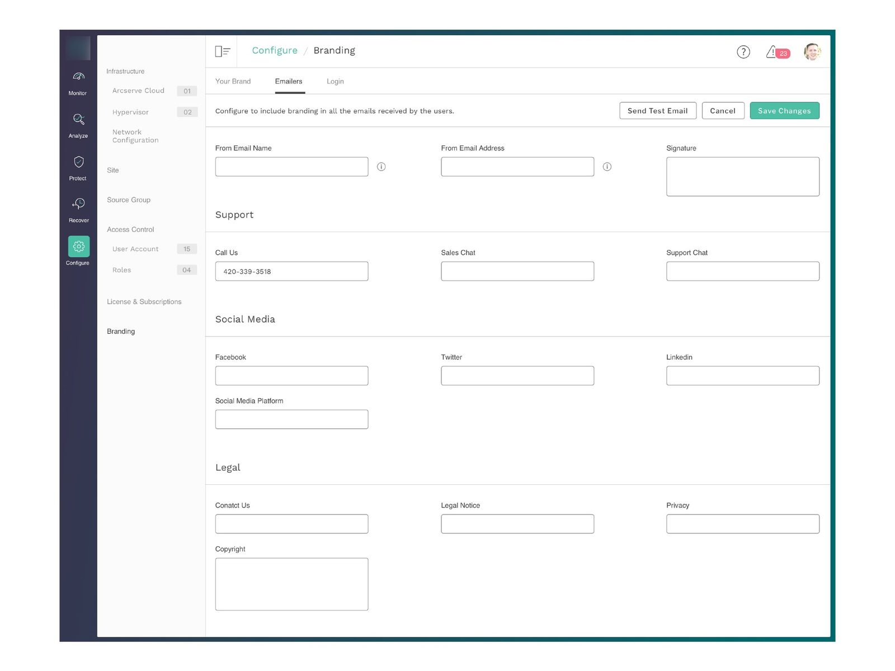

01 / Vision
Product vision & attributes
Product vision
Guarantee data protection through seamless integrations of backup-restore, disaster recovery, high availability and archiving solutions.
Product attributes
- Trustworthy
- Modern
- Focused
- Adaptable
- Accurate
02 / Role
Responsibilities
- Created key screens user interface
- Used clean and attractive design and layout that would look impressive in all screen sizes and be easier to read
- Worked closely with the UX designer to give the design solution and hand over to the dev team
- Presented the visual screens and interactive prototype to the PO and the stakeholders and got approvals
- Provided continuous input during a functional walkthrough for accurate implementation

03 / System
Design system
Grid
A 12-column fluid grid, with a 70px primary navigation and an optional 200px secondary navigation.

Typography

Libre Franklin
The remaining font weights in the Libre Franklin family are used for body copy. Bold and Semibold should be reserved for callouts only, and not large amounts of text.
Work Sans
Work Sans is a simple font optimized for screen resolutions. The Regular weight and others in the middle of the family are optimized for on-screen text usage at medium sizes.
Colors
Status indicators, core colors, neutrals and additional accent colors.

Iconography
Icons are a great way to bring essential content to the point. They grab attention and help users find, understand and scan content.

04 / Visual
Visual experience



